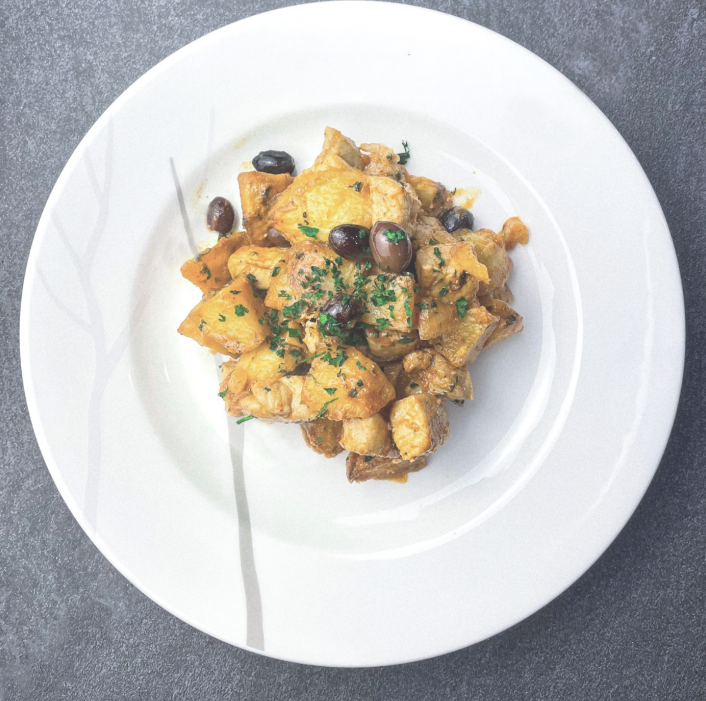

Carne de porco a portuguesa

Description
Carne de Porco à Portuguesa, the cousin of Alentejana, the difference? No
clams! If you love Portuguese food, but aren't in the mood for seafood,
this is for you! It's simple to make and packed with flavor.
Ingredients
- 1 lbs Cubed Pork
- 3 cloves Garlic
- 3/4 cups White Wine
- 5 tbsp Olive Oil
- 1 tbsp Massa de Pimentao
- 1 Bay Leaf
- 2 tbsp Parsley
- Olives
- Salt, Pepper
Preparation
-
Cut the pork into medium cubes and season with salt, pepper, finely
chopped garlic, bay leaf, massa de pimentao, white wine and 1 tablespoon
of olive oil.
- Mix well and let it marinate for at least 2 hours.
-
Meanwhile coat the potato cubes in olive oil, and air fry for about
20-25 minutes, shaking basket every 5 minutes.
-
Add remaining Olive oil in a pan, and when hot, fry the pork for about 5
minutes (save the marinade).
- Once cooked, remove meat and set aside.
-
Deglaze the pan with the marinade, and then add potatoes, meat, olives
and parsley. Mix well. Simmer for 5 minutes. Serve.